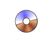
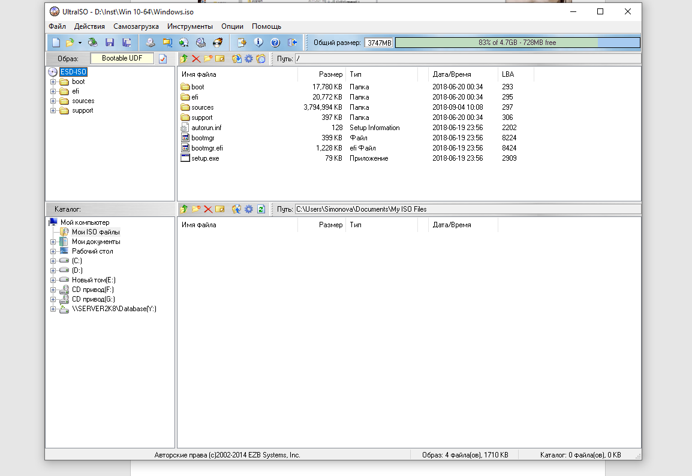
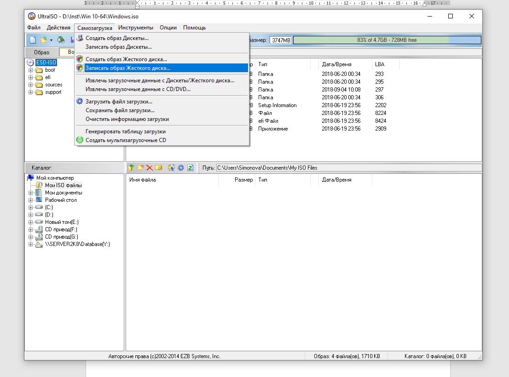
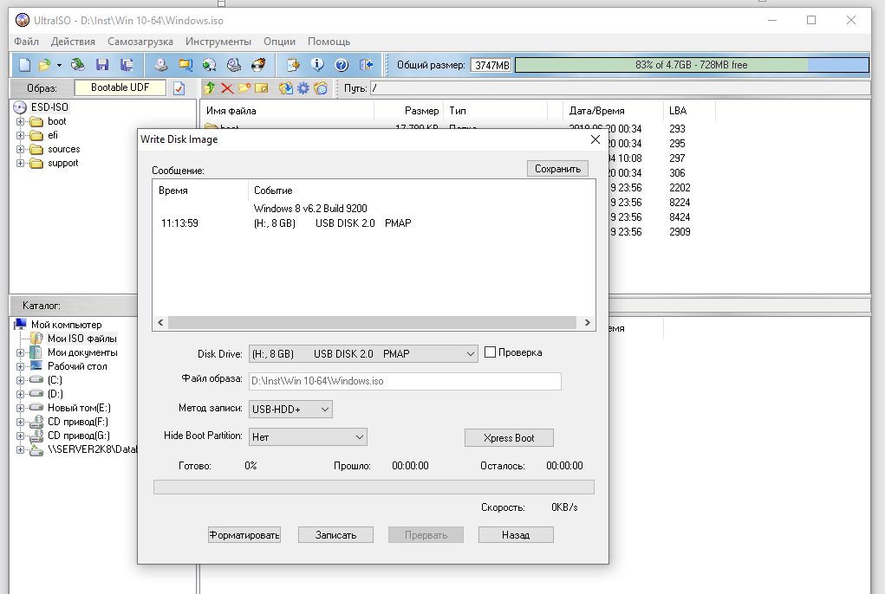
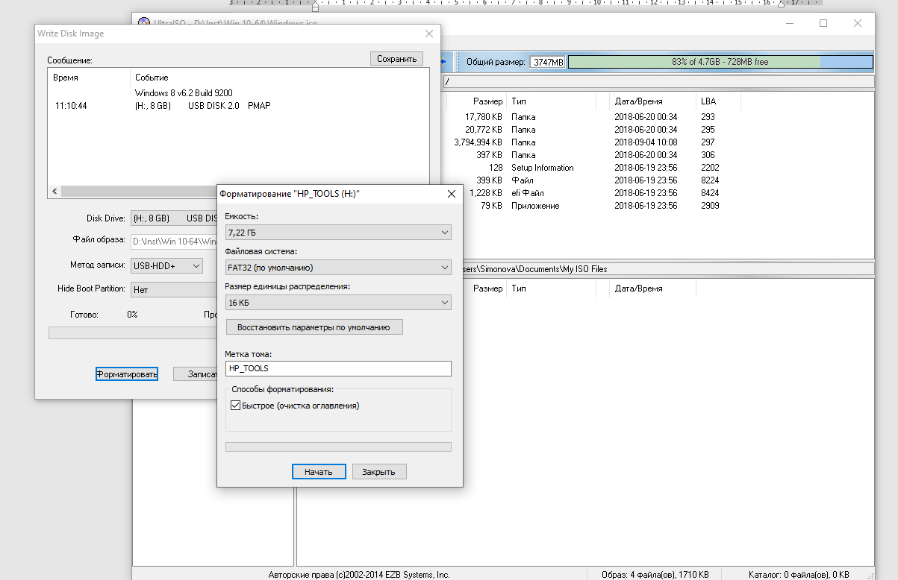

UltraISO
Рисунок 1 - UltraISO
Инструмент для подключения виртуальных приводов UltraISO пользуется большой популярностью среди любителей компьютерного софта. UltraISO позволяет распаковывать и создавать образы самостоятельно из медиафайлов на вашем компьютере или копировать носители. Кроме этого, можно редактировать созданные проекты, сжимать их для экономии места, тестировать на ошибки. Также с ее помощью вы можете открывать и подключать ISO как съемный накопитель. Благодаря этому можно просматривать отдельные папки и медиафайлы без распаковки всего архива. Программа имеет базовую и бесплатную версии, что для многих пользователей порой является решающим аспектом при выборе программного обеспечения. Единственным ограничением при работе с программой в пробном режиме является размер используемых файлов.
Функциональность
Интерфейс программы
Рабочее окно UltraISO разделено на 4 области, в которых отображается содержимое образа, структура каталогов на жестком диске, файлы, находящиеся в папке, отмеченной пользователем. Главное меню находится вверху основного окна. Ниже размещены горячие клавиши, на которые разработчиками назначен основной функционал программы.
Основное окно приложения состоит из нескольких частей:
Рисунок 2 - Интерфейс программы
Строка меню содержит разделы всех команд и действий, которые доступны пользователю. Для быстрого доступа на панели инструментов находятся основные команды, которые используются чаще всего.
Основное окно программы служит для работы с содержимым диска или виртуального образа. Оно имеет функционал файлового менеджера, то есть пользователь может копировать, перемещать и удалять файлы прямо в окне приложения. Строка состояния отображает всю информацию о размерах папок, создаваемых дисках и образах.
Программ для записи и создания ISO образов много, но UltraISO популярна из-за возможности создания из образов загрузочной флешки.
Создание загрузочной флешки в Windows 10 с помощью программы UltraISO
Для создания загрузочной флешки нам понадобится образ Windows 10. Скачав образ с официального сайта и вставив флешку в компьютер запускаем программу UltraISO. Открываем скачанный образ Файл-Открыть. Добавлять файлы можно из разных каталогов, главное, чтобы суммарный объем файлов не превышал максимального объема диска, на который будет записываться виртуальный образ.
Рисунок 3 - Открываем образ Windows 10
Рисунок 4 - Выбираем меню Самозагрузка
После этого в разделе самозагрузки выбираем запись образа жесткого диска и нужный носитель (в нашем случае это USB-флешка). В окне Disk Drive должна быть прописана загрузочная флэшка, метод записи - USB-HDD+.
Рисунок 5 - Форматирование носителя
Для записи образа на флэшку нажимаем «Записать» и соглашаемся с информацией об очистке носителя. Ждем завершения процесса.
Рисунок 6 - Процесс выполнения записи
Плюсы:
Минусы:
Работа в программе показалась мне не очень сложной благодаря русскоязычному интерфейсу. UltraISO четко и быстро выполняет свою работу, что позволяет эффективно и качественно использовать продукты этого приложения.